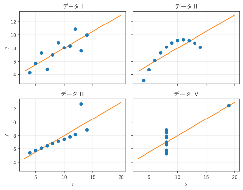

第 1 章 可視化とグラフ
この章では、なぜデータをグラフにするのかを例で確かめ、本書で扱う「グラフ」の範囲と、本書の読み方を説明する。
なぜ可視化するのか
データを要約するとき、平均や分散、相関係数といった要約統計量がよく使われる。要約統計量は便利だが、データの形の情報を捨てている。統計学者の Anscombe は、要約統計量がほぼ同じでも、グラフにすると全く違う 4 組のデータを示した [Anscombe1973]。これをアンスコムの例という。
4 組のデータは、どれも 11 個の点 \((x, y)\) からなる。サンプルの print_statistics() で要約統計量を計算すると、次の結果になる。
1組 x平均 x分散 y平均 y分散 相関係数
2I 9.00 11.00 7.50 4.13 0.816
3II 9.00 11.00 7.50 4.13 0.816
4III 9.00 11.00 7.50 4.12 0.816
5IV 9.00 11.00 7.50 4.12 0.817
数値だけを見ると、4 組は同じ性質のデータに見える。ところが、散布図に描くと違いは明らかである（図 1）。

図 1 アンスコムの例。4 組とも回帰直線（橙色の線）はほぼ同じである
データ I は、直線的な関係にばらつきが加わった、ごく普通のデータである。
データ II は、曲線的な関係を持つ。直線を当てはめるのは適切でない。
データ III は、1 点の外れ値を除けば完全な直線上に並ぶ。その 1 点が回帰直線を引っ張っている。
データ IV は、1 点を除いて \(x\) がすべて同じ値である。相関係数が高いのは、離れた 1 点のためである。
要約統計量だけで判断すると、これらの違いを見落とす。グラフにすれば、データの形、外れ値、関係の種類がすぐに分かる。これが可視化の第一の価値である。
44def create_figure() -> Figure:
45 """4 組のデータの散布図に回帰直線を重ねて描く."""
46 fig, axes = plt.subplots(2, 2, figsize=(7, 5.5), sharex=True,
47 sharey=True)
48 line_x = np.array([3.0, 20.0])
49 for ax, (name, (x_values, y_values)) in zip(axes.flat, DATASETS.items()):
50 x = np.array(x_values, dtype=float)
51 y = np.array(y_values, dtype=float)
52 slope, intercept = np.polyfit(x, y, 1)
53 ax.plot(line_x, slope * line_x + intercept, color="C1", zorder=1)
54 ax.scatter(x, y, color="C0", zorder=2)
55 ax.set_title(f"データ {name}")
56 ax.grid(alpha=0.3)
57 for ax in axes[1]:
58 ax.set_xlabel("x")
59 for ax in axes[:, 0]:
60 ax.set_ylabel("y")
61 fig.tight_layout()
62 return fig
サンプルの全体：ch01_anscombe.py
探索のための可視化と伝達のための可視化
可視化には、大きく分けて 2 つの目的がある。
項目 |
探索のための可視化 |
伝達のための可視化 |
|---|---|---|
目的 |
自分がデータを理解する |
他人に結論を伝える |
読み手 |
自分（分析者） |
上司、顧客、チームのメンバーなど |
グラフの数 |
多数のグラフを素早く描き捨てる |
少数のグラフを丁寧に仕上げる |
重視する点 |
描く速さ、さまざまな切り口 |
分かりやすさ、正確さ、強調 |
探索の段階では、軸のラベルや配色に凝る必要はない。いろいろなグラフを描いて、データの性質を探る。伝達の段階では、読み手が誤解なく結論を受け取れるよう、タイトル、単位、凡例、強調などを整える。本書の各章では主にグラフの選び方を扱い、第 14 章と第 15 章で伝達のための仕上げを扱う。
2 つの「グラフ」
日本語の「グラフ」には、2 つの意味がある。
本書での呼び方 |
英語 |
例 |
可視化するもの |
|---|---|---|---|
chart, plot |
棒グラフ、折れ線グラフ、散布図 |
数値データ（量、分布、関係、時間変化） |
|
graph |
依存関係図、木構造図、状態遷移図 |
構造（要素と、要素の間のつながり） |
1 つ目は、棒グラフや折れ線グラフのように、数値を図形の位置や長さで表したものである。本書ではこれを「チャート」と呼ぶ。2 つ目は、数学のグラフ理論でいうグラフで、要素（ノード）とそのつながり（エッジ）からなる図である。本書ではこれを「ネットワーク図」と呼ぶ。個々のグラフの名前（「棒グラフ」「有向グラフ」など）は、慣用に従ってそのまま使う。
本書は、第 I 部でチャートを、第 II 部でネットワーク図を扱う。
本書の構成
部 |
内容 |
|---|---|
はじめに |
第 1 章：可視化の意義と本書の範囲 |
第 I 部 データを可視化する |
第 2 章で可視化の基礎（データの型、視覚変数、グラフの構成要素）を説明し、第 3 章から第 9 章で、見せたいもの（量の比較、分布、関係、構成比、時間変化、多次元データ、平面上の量）ごとにグラフを解説する。 |
第 II 部 構造を可視化する |
第 10 章でネットワーク図の基礎を説明し、第 11 章から第 13 章で、階層構造、流れと手順、関係とつながりを描く図を解説する。 |
第 III 部 実践 |
第 14 章で誤解を招くグラフとその改善を、第 15 章でグラフの選び方とケーススタディを扱う。 |
付録 |
グラフ早見表、用語集、参考文献、サンプルコード一覧 |
各章の個々のグラフは、原則として「向いているデータと目的」「図」「読み方」「注意点」「コード」の順に説明する。第 I 部は第 2 章を読んでから、必要な章を拾い読みしてもよい。第 II 部も同様に、第 10 章を読んでから必要な章に進めばよい。
本書で扱わないこと
次の内容は、本書では要点だけを説明するか、扱わない。詳しく知りたい場合は、付録 C 参考文献の文献を参照してほしい。
統計的な推定や検定。本書では、グラフを読むのに必要な統計量（平均、中央値、パーセンタイル、相関係数など）だけを扱う。
配色の理論。第 2 章と第 14 章で、グラフで色を使うときの要点だけを説明する。
Graphviz の DOT 言語の文法。第 II 部で使う範囲の書き方だけを説明する。
マウス操作で拡大や絞り込みができる対話的なグラフ。第 15 章で紹介だけを行う。
サンプルコードの使い方
本書の図は、すべてサンプルコードから生成している。サンプルは付録 D サンプルコード一覧から一括でダウンロードでき、各章の本文からも個別にダウンロードできる。
サンプルの実行には、次のソフトウェアが必要である。
Python 3.10 以降
matplotlib 3.9 以降と NumPy（チャートの描画とデータの生成）
Graphviz と、Python の graphviz パッケージ（ネットワーク図の描画。第 II 部で使う）
必要なパッケージは、次のコマンドでインストールできる。Graphviz 本体は、公式サイトから入手してインストールする。
1$ pip install matplotlib numpy graphviz
チャートのサンプル（examples/py フォルダーの ch02_ から ch15_ で始まるファイル）は、次の共通の形で書いている。
1import matplotlib.pyplot as plt
2from matplotlib.figure import Figure
3
4import jpfont
5
6
7def create_figure() -> Figure:
8 """グラフを描いた Figure を返す."""
9 fig, ax = plt.subplots()
10 ... # ここでグラフを描く
11 return fig
12
13
14def main() -> None:
15 jpfont.setup() # 日本語を表示するフォントを設定する
16 create_figure()
17 plt.show() # ウィンドウに図を表示する
18
19
20if __name__ == "__main__":
21 main()
create_figure() は図を作って返すだけで、表示や保存はしない。本書をビルドするときは、この関数を呼び出して図を SVG 形式で保存している。自分で実行する場合は、サンプルのあるフォルダーで python ch03_bar.py のように実行すると、ウィンドウに図が表示される。
jpfont.py は、matplotlib で日本語を表示するためのフォントを設定する補助モジュールである。サンプルを個別にダウンロードして使う場合は、jpfont.py も同じフォルダーに置く必要がある。ほかにも、複数のサンプルで共通に使うデータや関数を、treemap.py などの補助モジュールにまとめている。どのサンプルがどの補助モジュールを使うかは、付録 D サンプルコード一覧にまとめた。